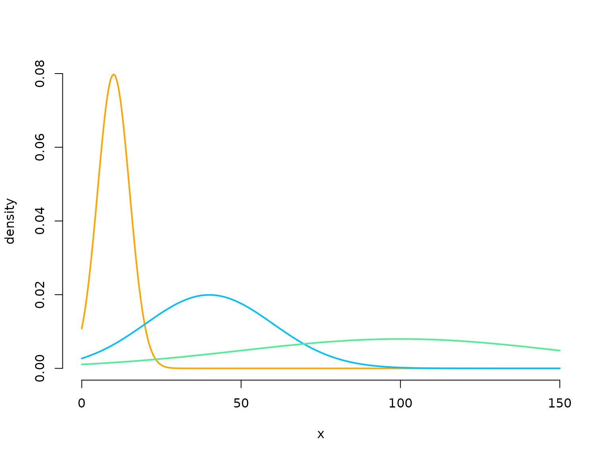
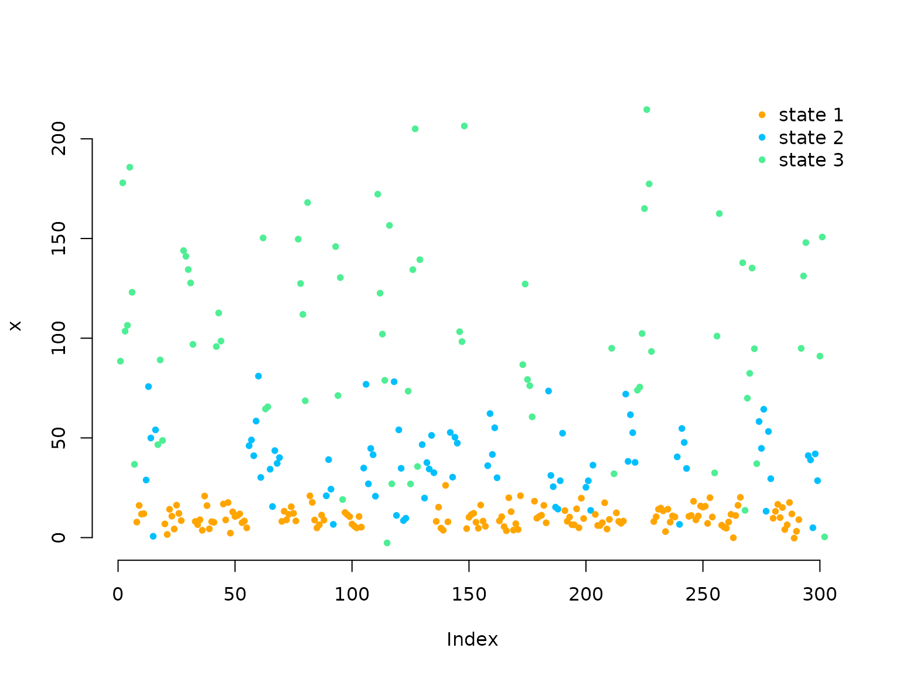
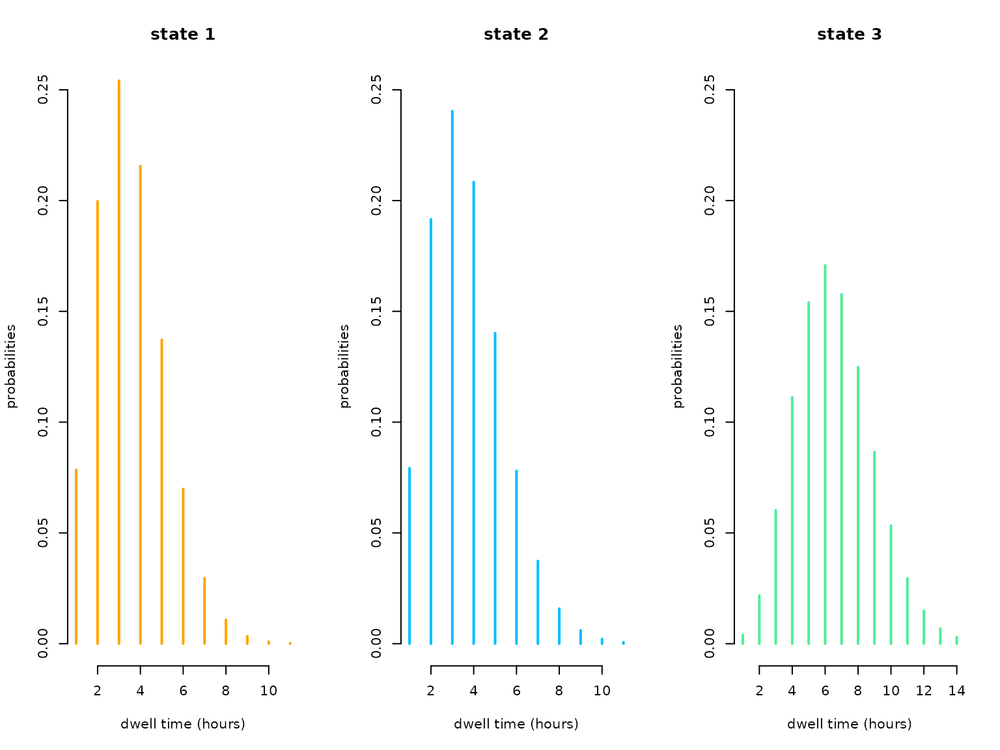

Hidden semi-Markov models
Jan-Ole Koslik
HSMMs.RmdBefore diving into this vignette, we recommend reading the vignette Introduction to LaMa.
So-called hidden semi-Markov models (HSMMs) are a flexible generalisation of HMMs to a semi-Markovian state process which is motivated by the fact that for homogeneous HMMs, the time spent in a hidden state, also called the state dwell time or sojourn time is necessarily geometrically distributed as a consequence of the Markov assumption. HSMMs are designed to mitigate this often unrealistic assumption by allowing for arbitrary distributions on the positive integers to be estimated for the state dwell time. Inference in such models becomes more involved, but Langrock and Zucchini (2011) showed that HSMMs can be estimated conveniently via approximating them by HMMs with an extended state space. Each state of the HSMMs is represented by a state aggregate of several states and the transition probabilities within each aggregate are designed carefully to represent the chosen dwell-time distribution. For more details see Langrock and Zucchini (2011) or Zucchini, MacDonald, and Langrock (2016). Due to this approximate inference procedure, such models can again be fitted by numerically maximising the (approximate) likelihood which can be evaluated using the forward algorithm.
Simulation example
We begin by considering homogeneous HSMMs. In such models, each state has an associated state dwell-time distribution. The transition probability matrix of a regular HMM is replaced by these distributions and the conditional transition probabilities given the state is left.
Setting parameters
Here we choose the simplest case of dwell times that are shifted Poisson distributed. We have to specify the Poisson mean for each state, the conditional transition probability matrix called and the parameters of the state-dependent process.
lambda = c(7, 4, 4)
omega = matrix(c(0, 0.7, 0.3,
0.5, 0, 0.5,
0.7, 0.3, 0), nrow = 3, byrow = TRUE)
mu = c(10, 40, 100)
sigma = c(5, 20, 50)
color = c("orange", "deepskyblue", "seagreen2")
curve(dnorm(x, mu[1], sigma[1]), lwd = 2, col = color[1], bty = "n",
xlab = "x", ylab = "density", xlim = c(0, 150), n = 300)
curve(dnorm(x, mu[2], sigma[2]), lwd = 2, col = color[2], add = T)
curve(dnorm(x, mu[3], sigma[3]), lwd = 2, col = color[3], add = T)
Simulating data
We simulate data by drawing dwell times from the dwell-time distribution of the current state and then draw the next state using the conditional transition probabilities. The state-dependent process is drawn conditional on the current state.
set.seed(123)
k = 50 # number of stays
s = rep(NA, k)
s[1] = sample(1:3, 1) # uniform initial distribution
staylength = rpois(1, lambda[s[1]]) + 1 # drawing dwell time from shifted Poisson
C = rep(s[1], staylength)
x = rnorm(staylength, mu[s[1]], sigma[s[1]])
for(t in 2:k){
# conditionally drawing state
s[t] = sample(c(1:3)[-s[t-1]], 1, prob = omega[s[t-1], -s[t-1]])
staylength = rpois(1, lambda[s[t]]) + 1 # drawing dwell time from shifted Poisson
C = c(C, rep(s[t], staylength))
x = c(x, rnorm(staylength, mu[s[t]], sigma[s[t]]))
}
plot(x, pch = 20, col = color[C], bty = "n")
legend("topright", col = color, pch = 20,
legend = paste("state", 1:3), box.lwd = 0)
Writing the negative log-likelihood function
We now write the negative log-likelihood function for an
approximating HMM. As a semi-Markov chain is specified in terms of
state-specific dwell-time distributions and conditional transition
probabilities given that the current state is left, we have to compute
both (here called dm and omega). For the
latter, we can use the function tpm_emb() that constructs a
transition probability matrix via the inverse multinomial logit link
(softmax), where the diagonal entries are forced to equal zero.
The transition probability matrix of the approxmiating HMM can then
be computed by the function tpm_hsmm() where the exact
procedure is detailed by Langrock and Zucchini
(2011). We need the extra
argument agsizes to specify the aggregate sizes that should
be used to approximate the dwell-time distributions. These should be
chosen such that most of the support of the state-specific dwell-time
distributions is covered.
nll = function(par, x, N, agsizes){
mu = par[1:N]
sigma = exp(par[N+1:N])
lambda = exp(par[2*N+1:N])
omega = if(N==2) tpm_emb() else tpm_emb(par[3*N+1:(N*(N-2))])
dm = list() # list of dwell-time distributions
for(j in 1:N) dm[[j]] = dpois(1:agsizes[j]-1, lambda[j]) # shifted Poisson
Gamma = tpm_hsmm(omega, dm, sparse = FALSE)
delta = stationary(Gamma)
allprobs = matrix(1, length(x), N)
ind = which(!is.na(x))
for(j in 1:N){
allprobs[ind,j] = dnorm(x[ind], mu[j], sigma[j])
}
-forward_s(delta, Gamma, allprobs, agsizes)
}Fitting an HSMM (as an approxiating HMM) to the data
# intial values
par = c(10, 40, 100, log(c(5, 20, 50)), # state-dependent
log(c(7,4,4)), # dwell time means
rep(0, 3)) # omega
agsizes = qpois(0.95, lambda)+1
system.time(
mod <- nlm(nll, par, x = x, N = 3, agsizes = agsizes, stepmax = 2)
)
#> user system elapsed
#> 0.902 0.040 0.942Fitting HSMMs is rather slow (even using C++) as we translate the additional model complexity into a higher computational overhead (31 states here).
Results
N = 3
(mu = mod$estimate[1:N])
#> [1] 10.16569 39.06161 107.66034
(sigma = exp(mod$estimate[N+1:N]))
#> [1] 4.78882 19.35639 48.56115
(lambda = exp(mod$estimate[2*N+1:N]))
#> [1] 6.942983 4.595469 3.354765
(omega = tpm_emb(mod$estimate[3*N+1:(N*(N-2))]))
#> [,1] [,2] [,3]
#> [1,] 0.0000000 0.5541031 0.4458969
#> [2,] 0.5040939 0.0000000 0.4959061
#> [3,] 0.6654702 0.3345298 0.0000000Real-data application
We now want to briefly show the analysis of a real data set using
hidden semi-Markov models. For this purpose we use the movement track of
an Arctic muskox contained in the R package
PHSMM. Originally these data where collected by Beumer et al. (2020) and have already been
analysed by Pohle, Adam, and Beumer (2022).
library(PHSMM)
data = muskox[1:1000, ] # only using first 1000 observations for speed
head(data)
#> date tday x y step
#> 88273 2013-10-11 22:00:00 15 513299.2 8264867 17.998874
#> 88274 2013-10-11 22:00:00 16 513283.4 8264875 8.214733
#> 88275 2013-10-11 22:00:00 17 513284.3 8264883 7.205098
#> 88276 2013-10-11 22:00:00 18 513280.4 8264877 53.378332
#> 88277 2013-10-11 22:00:00 19 513252.0 8264922 719.242687
#> 88278 2013-10-11 22:00:00 20 513386.7 8265629 10.797127As these data have already been preprossed, we can immediately write
the negative log-likelihood function. When modeling the dwell-time
distribution of real processes, it is typically advisable to use a more
flexible distribution than the shifted Poisson distribution, as the
latter cannot account for overdispersion. Here, we will employ the
shifted negative binomial distribution that yields the Poisson
distribution as a special case for the dispersion parameter equal to
zero. The state-dependent step lengths are modelled by gamma
distributions, where we reparametrise the gamma distribution in terms of
its mean and standard deviation as opposed to shape and scale for better
interpretability using dgamma2().
nll_muskox = function(par, step, N, agsizes){
# parameter transformation from working to natural
mu = exp(par[1:N]) # step mean
sigma = exp(par[N+1:N]) # step standard deviation
mu_dwell = exp(par[2*N+1:N]) # dwell time mean
phi = exp(par[3*N+1:N]) # dwell time dispersion
omega = if(N==2) tpm_emb() else tpm_emb(par[4*N+1:(N*(N-2))])
dm = list() # list of dwell-time distributions
for(j in 1:N){
dm[[j]] = dnbinom(1:agsizes[j]-1, mu=mu_dwell[j], size=1/phi[j])
}
Gamma = tpm_hsmm(omega, dm, sparse = FALSE)
delta = stationary(Gamma)
allprobs = matrix(1, length(step), N)
ind = which(!is.na(step))
for(j in 1:N) allprobs[ind,j] = dgamma2(step[ind], mu[j], sigma[j])
-forward_s(delta, Gamma, allprobs, agsizes)
}Fitting an HSMM (as an approxiating HMM) to the muskox data
# intial values
par = c(log(c(4, 50, 300, 4, 50, 300)), # state-dependent mean and sd
log(c(3,3,5)), # dwell time means
log(c(0.01, 0.01, 0.01)), # dwell time dispersion
rep(0, 3)) # omega
agsizes = c(11,11,14)
system.time(
mod_muskox <- nlm(nll_muskox, par, step = data$step, N = 3,
agsizes = agsizes, iterlim = 500)
)
#> user system elapsed
#> 3.519 0.006 3.525Results
We retransform the parameters for interpretation
par = mod_muskox$estimate; N = 3
(mu = exp(par[1:N])) # step mean
#> [1] 4.408099 55.515658 306.504024
(sigma = exp(par[N+1:N])) # step standard deviation
#> [1] 3.148114 50.337744 331.538470
(mu_dwell = exp(par[2*N+1:N])) # dwell time mean
#> [1] 2.544962 2.660363 5.541782
(phi = exp(par[3*N+1:N])) # dwell time dispersion
#> [1] 3.064184e-05 3.752145e-02 1.180189e-09
(omega = tpm_emb(par[4*N+1:(N*(N-2))])) # embedded t.p.m.
#> [,1] [,2] [,3]
#> [1,] 0.0000000 0.6865916 3.134084e-01
#> [2,] 1.0000000 0.0000000 2.241923e-08
#> [3,] 0.8210919 0.1789081 0.000000e+00In this case the Poisson distribution would have been sufficiently flexible as all dispersion parameters were estimated very close to zero. We can easily visualise the estimated state-specific dwell-time distributions:
oldpar = par(mfrow = c(1,3))
for(j in 1:N){
plot(1:agsizes[j], dnbinom(1:agsizes[j]-1, mu=mu_dwell[j], size = 1/phi[j]),
type = "h", lwd = 2, col = color[j], xlab = "dwell time (hours)",
ylab = "probabilities", main = paste("state",j), bty = "n", ylim = c(0,0.25))
}
par(oldpar)